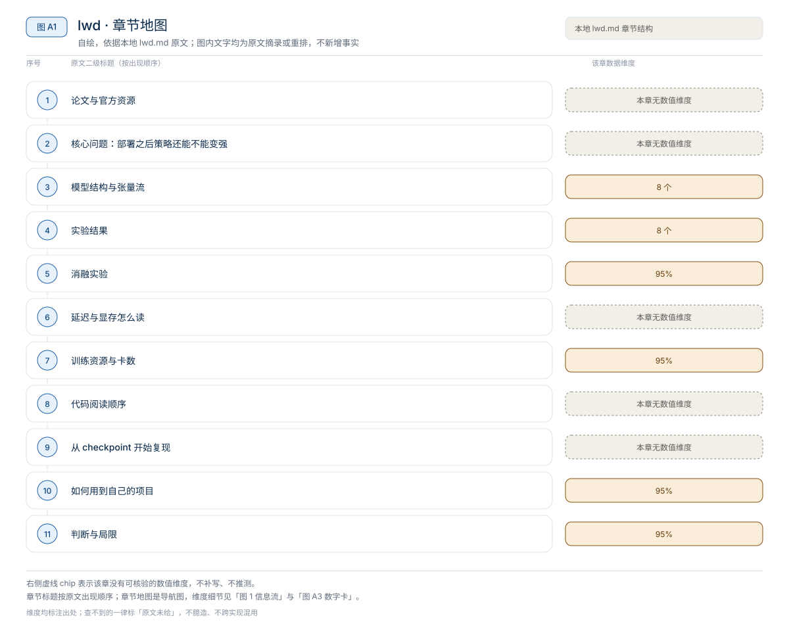
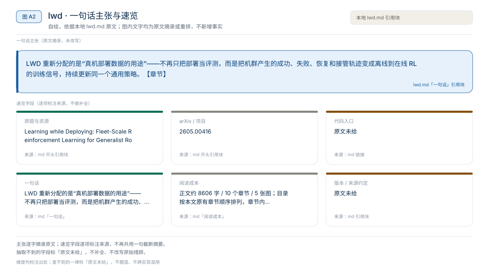
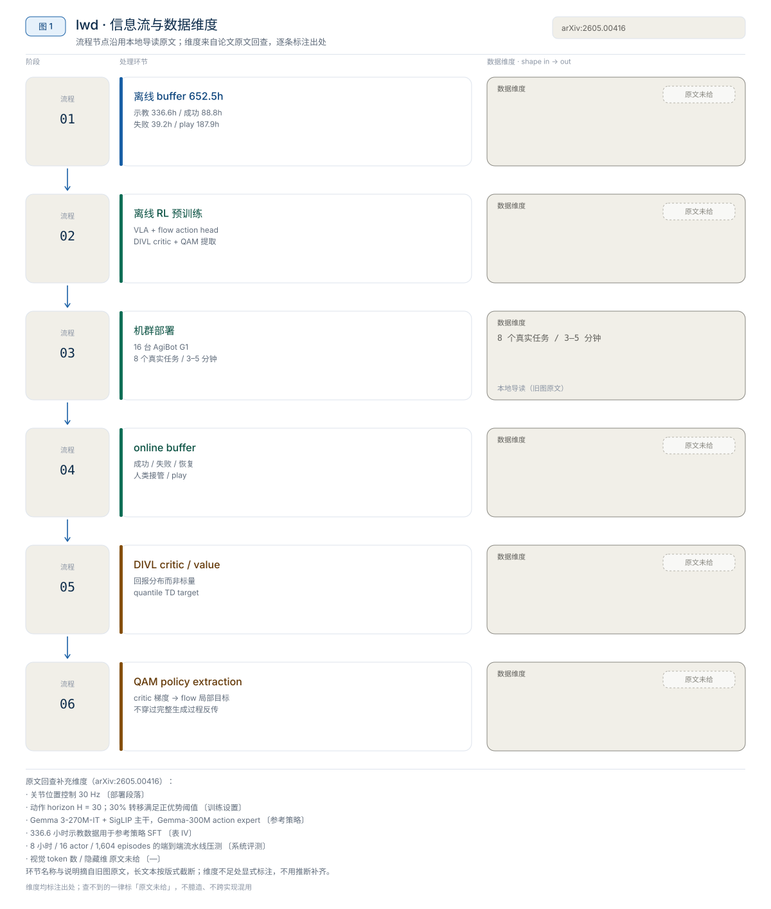
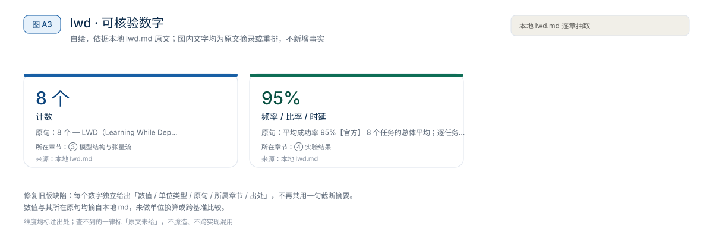
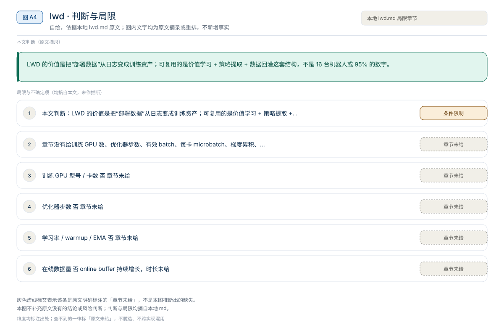

【VLA 精读 · 训练范式】Agentic-VLA：给 OpenVLA-OFT 加一个会设计奖励、引导探索、复用权重的在线适应外环
Agentic-VLA 重新分配的是“部署后如何继续学习”的接口——不再只靠人工补示教或固定奖励，而是让 Experience Memory、VLM 探索 critic 和语言模型奖励分解共同调度一次在线 RL 适应。【章节】
训练范式
LWD 重新分配的是“真机部署数据的用途”——不再只把部署当评测，而是把机群产生的成功、失败、恢复和接管轨迹变成离线到在线 RL 的训练信号，持续更新同一个通用策略。【章节】
原题与资源：Learning while Deploying: Fleet-Scale Reinforcement Learning for Generalist Robot Policies · arXiv:2605.00416
一句话：LWD 重新分配的是“真机部署数据的用途”——不再只把部署当评测，而是把机群产生的成功、失败、恢复和接管轨迹变成离线到在线 RL 的训练信号，持续更新同一个通用策略。【章节】
阅读成本：正文约 8606 字 / 10 个章节 / 5 张图；目录按本文原有章节顺序排列，章节内容未改动。
目录（点击跳到对应章节）：

图 A1：本文章节地图（节点即原文 h2 标题）。自绘，依据本文，不新增事实。
LWD（Learning While Deploying）把“部署”从测试环节改成训练环节：一个共享的通用 VLA 在 16 台 AgiBot G1 双臂机器人、8 个真实操作任务上持续收集成功、失败、恢复和人类干预数据，用离线到在线 RL 更新后再部署。本地章节转述的头条数字是：离线数据 652.5h（专家示教 336.6h、成功 rollout 88.8h、失败 rollout 39.2h、play data 187.9h）；平均成功率 95%；长时程任务通常持续 3–5 分钟，且最大增益出现在长时程任务上。以上为章节转述的论文摘要与附录口径，未在本机复测；论文没有公开代码与权重。
来源约定：本文事实只取自本仓库 LWD 导读，没有用模型记忆补写论文细节。
标注约定：【官方】指本地章节转述的论文/项目页作者报告；【章节】指本地章节自己的归纳。
版本：arXiv2605.00416v1，2026-05-01 提交；项目页发布 2026-04-30；代码 commit：无公开代码；查阅日期 2026-11-01。
| 资源 | 入口 | 说明 |
|---|---|---|
| 论文 | arXiv:2605.00416 / HTML / PDF | 方法、机群实验、数据统计与训练细节 |
| 源码 | 章节未给 | 官方项目页当前未展示独立代码仓库入口 |
| 权重 | 章节未给 | 章节未给 checkpoint、模型卡或部署脚本 |
| 项目页 | AGIBOT Finch LWD | 方法图、结果图与真机任务视频 |
| 数据集 | 章节未给 | 论文附录给 652.5h 离线数据统计，没有公开数据地址 |
| 前置方法 | Q-learning with Adjoint Matching | LWD 采用的 flow policy 策略提取方法 |
论文题目：Learning while Deploying: Fleet-Scale Reinforcement Learning for Generalist Robot Policies；作者单位：Shanghai Innovation Institute、AGIBOT Finch、Columbia University；arXiv：2605.00416v1；版本：2026-05-01 提交；代码 commit：无公开代码；查阅日期：2026-11-01。
版本提示：项目页标注 2026-04-30 发布，arXiv 记录 2026-05-01 提交，章节把它们当作同一版工作；本文所有数字都按这一版读，不混用其他 release。章节没有给 v2 或后续版本。
开源边界：官方项目页公开了论文、图和真机视频，但没有代码仓库、模型权重或机器人侧部署脚本入口。因此本文只做方法、系统和复现设计层面的精读，不写“下载即训练”的教程。【章节】

图 A2：一句话主张与速览字段。自绘，依据本文，不新增事实。
一句话：LWD 重新分配的是“真机部署数据的用途”——不再只把部署当评测，而是把机群产生的成功、失败、恢复和接管轨迹变成离线到在线 RL 的训练信号，持续更新同一个通用策略。【章节】

图 1：LWD 的离线预训练、机群部署、在线 buffer 与 DIVL/QAM 更新闭环。自绘，依据本地导读；不是论文原图。
对比主流路径：离线示教 + 行为克隆 → 部署测试（结束）→ 离线示教 + 离线 RL 预训练 → 机群部署 → 混合 replay 的离线到在线 RL → 再部署。

图 A3：本文可核验的数字摘录。自绘，依据本文，不新增事实。
一个具体任务走一遍 · 本文可核验数字与字段速查（以下均摘自原文，未作推算）：
| 项目 | 章节给出的内容 | 说明 |
|---|---|---|
| 机器人 | 16 台 AgiBot G1 双臂机器人【官方】 | 是部署机群规模，不等于训练 GPU 数 |
| 任务 | 8 个真实操作任务【官方】 | 商超补货、泡功夫茶、调鸡尾酒、榨果汁、打包鞋盒等 |
| 任务时程 | 长时程任务通常 3–5 分钟【官方】 | 解释了为什么长时程任务更需要价值传播 |
| 策略 | 一个共享 generalist VLA policy【官方】 | 不是每任务一个专家 |
| 动作生成 | flow-based action generator，输出 action chunk【章节】 | chunk 长度、去噪步数、动作维度章节未给 |
| 训练范式 | fleet-scale offline-to-online RL【官方】 | 两阶段：离线 RL 预训练 + 混合 replay 持续后训练 |
章节强调 LWD 不是单任务 RL 算法，也不是“给每个任务训练一个专家策略”。它的对象是一个跨任务共享的通用策略，机群只是数据来源和部署载体。【章节】
LWD 有一个静态 offline buffer 和一个持续增长的 online buffer。离线 buffer 来自人工示教、历史策略 rollout 和 play data；online buffer 来自部署中的机器人机群。【章节】
| 数据类别 | 章节给出的时长 | 在训练中的角色 |
|---|---|---|
| Expert demonstration | 336.6h | 提供较干净的动作标签与任务先验 |
| Success rollout | 88.8h | 提供当前/历史策略的成功行为 |
| Failure rollout | 39.2h | 给 critic 提供失败状态与低回报样本 |
| Play data | 187.9h | 人类有意探索失败模式和边界状态 |
| 离线合计 | 652.5h | 离线 RL 预训练的主体 |
| Online buffer | 章节未给时长 | 部署期间持续增长，用于混合 replay |
数据账本能对上（按章节数字直接相加）：
652.5h = 336.6h + 88.8h + 39.2h + 187.9h部署期数据不只有成功示教。章节列出的类型包括：成功 rollout、失败 rollout、partial progress、recovery、human intervention 和 play data。【章节】行为克隆只能利用“专家在这里做了什么”的动作标签；LWD 想利用的是“这段轨迹最终好不好、哪里离成功更近、哪些失败状态应该避免”。
| 维度 | 普通标量 critic | DIVL |
|---|---|---|
| 学习目标 | 回归一个期望回报 | 学习 replay action-value 的分布 |
| TD target | 单点估计 | 从分布取 quantile statistic 做 bootstrap |
| 混杂 replay | 成功、失败、接管、不同策略版本容易被平均掉 | 保留多峰回报结构，稀有高回报行为不易被抹平 |
| 稀疏奖励 | 终点信号传播弱 | 多步 TD 可把成功信号往前传播 |
| 与 IQL 关系 | — | 保留 in-distribution 改进思想 |
按章节文字可以写成下面的示意式（不是论文原式；分布参数化、quantile 取值与损失章节未给）：
$$
y_t \;=\; \mathrm{Quantile}_{\tau}\big(Z(s_{t+1}, a_{t+1})\big)
$$
其中 Z 是 action-value 分布，τ 是选定的分位。章节的解释是：真机 replay 里同一状态附近可能同时有成功、失败、接管、恢复和不同策略版本的动作，一个标量很容易把这些结果平均掉；DIVL 用分布保留这种异质性，同时仍然不要求数据来自当前 policy。【章节】
先纠正缩写：LWD 里的 QAM 是 Q-learning with Adjoint Matching，不是视觉模型里的 Query Attention Module，也不是“去掉 actor 换成一个 attention head”。actor 仍然存在，只是由通用 VLA 的 flow-based policy head 承担；QAM 做的是 policy extraction。【章节】
| 方法 | policy 形式 | 更新难点 | LWD 的处理 |
|---|---|---|---|
| SAC / TD3 等 actor-critic | 显式 actor 输出连续动作 | 对动作求梯度直接 | 不适合直接套到大 VLA flow policy |
| 行为克隆 | 模仿专家 action | 用不了失败与稀疏 reward 的价值信息 | 可做预训练，但部署数据利用不足 |
| 直接对 flow policy 反传 critic | 多步生成式 action policy | 要穿过完整生成过程反传，昂贵且不稳定 | QAM 改成局部 adjoint matching |
| LWD | VLM-based policy + flow action head | 从 critic 稳定改进生成式 action chunk | DIVL 学价值，QAM 做策略提取 |
为什么不能直接反传：flow policy 的最终动作是多步生成过程的结果，把 critic 梯度从最终 action chunk 反传到所有 flow steps 又慢又不稳。QAM 把最终动作上的改进方向通过 adjoint matching 变成每个局部 flow step 可回归的目标，使更新更像监督回归，而不是对完整 ODE 轨迹做高方差优化。【章节】章节没有给 adjoint matching 的推导、flow 步数或损失权重。
章节只给总体结论，没有给逐任务成功率、每任务 trials、种子或置信区间。下表把“章节给出的结果”和“口径边界”放在一起。
| 项目 | 章节给出的结果 | 口径 / 边界 |
|---|---|---|
| 机群规模 | 16 台 AgiBot G1 双臂机器人【官方】 | 单机群、厂商自有硬件 |
| 任务数 | 8 个真实操作任务【官方】 | 任务清单章节只给例子，未给完整定义 |
| 平均成功率 | 95%【官方】 | 8 个任务的总体平均；逐任务数值未给 |
| 最大增益 | 出现在长时程任务上【官方】 | 增益幅度与 baseline 数值未给 |
| cycle time | 部分长时程任务平均 cycle time 下降【官方】 | 说明不是靠更慢更保守换成功率；数值未给 |
| 对比基线 | “若干 post-training baseline”【官方】 | 基线名称、版本与调参预算未给 |
读法：
来源：本地 LWD 导读 §1、§8 转述论文摘要与项目页。
章节没有给任何消融表，也没有给 DIVL、QAM、buffer 组成或机群规模的逐项对照。这里只能列出“论文声称的贡献”和“读者无法从章节验证的部分”：
读者该不该复用：如果部署数据里失败和半成功占比高、任务时程长、奖励稀疏，DIVL + QAM 这套组合值得借鉴；如果只有干净的专家示教，行为克隆更简单。章节没有给“DIVL 比标量 critic 高多少”的数字，复现时必须在自己的数据上做 A/B，不能引用论文的 95% 当作方法收益。
来源：本地 LWD 导读 §4、§6、§7。
章节没有给策略推理延迟、推理显存、训练显存或控制频率，只给了任务时程与 cycle time 的方向性结论。因此不能从 flow policy 的生成步数推算控制频率。能确认的只有：长时程任务单 episode 约 3–5 分钟；部分长时程任务的 cycle time 下降；cycle time 是端到端任务耗时，不是单次推理延迟；控制频率与 action chunk 长度章节未给，无法把单次前向换算成闭环频率。
读法：
1000 / 延迟 只说明策略调用频率，不等于动作执行频率或端到端反馈频率；本文没有可用的延迟数值，因此不做这种换算。来源：本地 LWD 导读 §8。
章节没有给训练 GPU 数、优化器步数、有效 batch、每卡 microbatch、梯度累积、学习率、warmup、EMA 或冻结模块；它给的是部署机群规模与数据规模。两者不能互换：16 台机器人说明数据从哪来，不说明训练用了多少卡。
| 训练项目 | 章节是否给出 | 内容 |
|---|---|---|
| 部署机群 | 是 | 16 台 AgiBot G1 双臂机器人 |
| 训练 GPU 型号 / 卡数 | 否 | 章节未给 |
| 优化器步数 | 否 | 章节未给 |
| 有效 batch / microbatch / 梯度累积 | 否 | 无法用 B_eff = N_GPU × B_micro × N_accum 反推 |
| 学习率 / warmup / EMA | 否 | 章节未给 |
| 离线数据量 | 是 | 652.5h，四类构成见 §3.2 |
| 在线数据量 | 否 | online buffer 持续增长，时长未给 |
| 冻结模块 | 否 | VLM backbone 是否冻结、flow head 是否全参更新未给 |
训练流程可以确认的是两阶段：先在离线 buffer 上做 RL 预训练，再用离线 buffer 与在线 buffer 的混合 replay 做持续后训练。【章节】章节没有给两阶段各自的步数、采样比例或切换条件。
三级复现的可行性：
来源：本地 LWD 导读 §4、§10。
章节没有公开代码，因此不存在可核对的路径。下表按论文方法块列出“若后续开源应先读什么”，路径列全部是章节未给，不要当成官方目录。
| 顺序 | 方法模块（章节描述） | 阅读重点 | 官方路径 |
|---|---|---|---|
| 1 | offline buffer 构建 | 示教、成功/失败 rollout、play data 的字段与配比 | 章节未给 |
| 2 | DIVL critic / value | 分布参数化、quantile 选择、TD target 与 IQL 约束 | 章节未给 |
| 3 | QAM policy extraction | adjoint matching 的局部目标如何从 critic 梯度构造 | 章节未给 |
| 4 | flow-based action head | 多步生成、action chunk、与 VLM backbone 的接口 | 章节未给 |
| 5 | online buffer / 部署调度 | 机群数据回灌、policy version、intervention 标记 | 章节未给 |
| 6 | reward / terminal 定义 | 成功判定、失败判定、partial progress 如何记 | 章节未给 |
坑（章节明确提示）：
没有 checkpoint，也没有官方训练入口，所以严格复现不成立。可做的是按章节建议分三档。
先回答四个问题：offline / online buffer 各包含什么；DIVL 为什么比标量 value regression 更适合 heterogeneous replay；QAM 如何把 critic gradient 转成 flow policy 的局部监督；长时程任务里 RL 为什么比纯 BC 更能利用失败、恢复和 partial progress。
章节建议的缩小版流程如下（教学伪代码，未在本机验证；具体库与接口需自行选择）：
离线示教 buffer + 历史 rollout buffer
→ 训练 DIVL critic/value（分布 + quantile TD target）
→ 用 QAM 或近似 policy extraction 更新 flow/diffusion policy
→ 新 policy 在线 rollout，写入 online buffer
→ 混合采样，重复
→ 对照：BC / offline RL / offline-to-online RL这个版本能验证算法闭环与数据配比，不能证明 fleet-scale 真机能力。
章节列出的条件包括：至少一台稳定可重复执行任务的机械臂平台；可中止的在线 rollout 机制；每 episode 的成功/失败 reward 定义；记录 image、state、action、instruction、policy version、intervention 标记和 terminal reward；离线/历史/在线数据混合采样；稳定的基础 VLA 或 flow action policy。
真机复刻要先做安全门控，而不是直接开在线 RL：限制速度、力、工作空间、碰撞区域和失败恢复方式；在线更新后的 policy 先在离线 replay、仿真或 shadow mode 检查，再逐步上真机。【章节】这些是工程建议，不是论文验证过的安全协议。
LWD 的价值是把“部署数据”从日志变成训练资产；可复用的是价值学习 + 策略提取 + 数据回灌这套结构，不是 16 台机器人或 95% 的数字。
相关章节：PRTS、Dexora、G0.5、LWD 导读、01 技术专题。
本文判断：LWD 的价值是把“部署数据”从日志变成训练资产；可复用的是价值学习 + 策略提取 + 数据回灌这套结构，不是 16 台机器人或 95% 的数字。
局限与不确定项（以下均摘自本文，未作推断）：

图 A4：局限与不确定项摘录。自绘，依据本文，不新增事实。
覆盖范围：本页新增的导读、目录、章节地图、数字卡与局限清单，均为原文信息的重排或摘录；正文、数据与实验结论未改动。